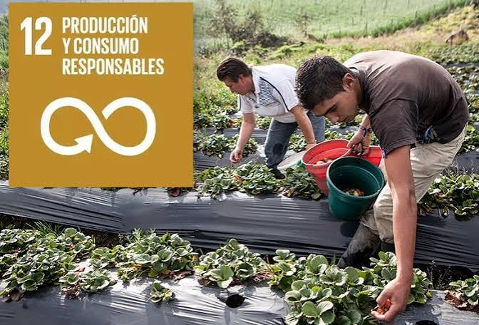
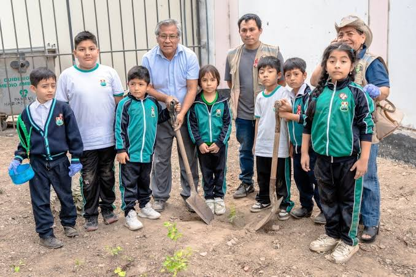
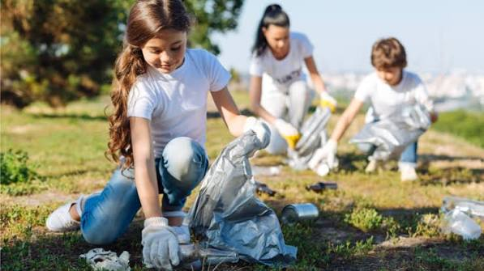
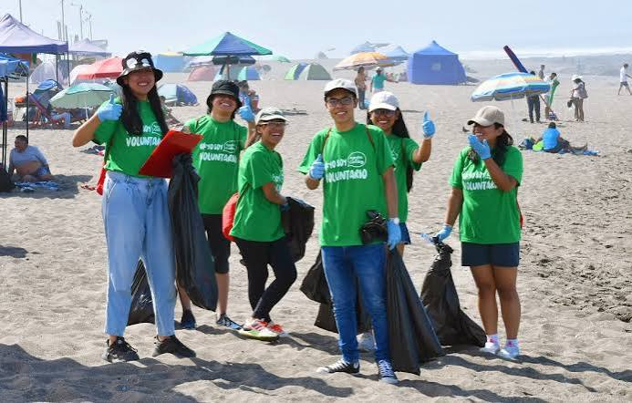
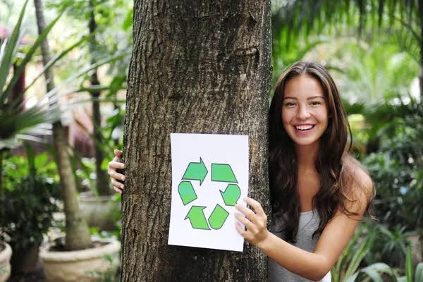
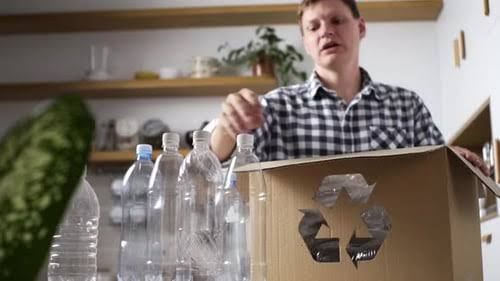

Reconoce un objeto
Revisa las referencias ficticias del puesto de objetos encontrados.
Ver referenciasOrganización Fortaleciente del Reciclaje
Una mochila olvidada entre los puestos. Una libreta que guarda una historia. En ACME te ayudamos a dar el primer paso para recuperarlas.
Conoce las categorias Conocer la iniciativaUn caso ficticio para aprender HTML y CSS.


Compromiso con un futuro sostenible
Somos una organización que promueve iniciativas relacionadas con el Objetivo de Desarrollo Sostenible asignado a nuestro equipo.
Promover y garantizar modelos de consumo y producción sostenibles a través de la gestión eficiente de los recursos naturales y la reducción drástica de la generación de residuos.
Consolidarnos como un referente regional en la transformación cultural hacia la sostenibilidad, liderando el cambio hacia un modelo global donde la producción y el consumo sean plenamente responsables y circulares.
HU-C · Simulación de Solicitudes y Consumo
Controla tus hábitos ecoamigables añadiendo la cantidad de envases plásticos gestionados hoy para visualizar tu acumulado diario.
Un recorrido sencillo
Revisa las referencias ficticias del puesto de objetos encontrados.
Ver referenciasPrueba una solicitud con una característica que permita reconocer tu objeto.
Probar solicitudConsulta cómo sería el acompañamiento de la mesa de ayuda.
Ver la guíaElige una categoría y revisa como reutilizar los distintos materiales.
Referencias inventadas. No se realizan búsquedas ni comprobaciones automáticas. La elección no se transfiere al formulario.
Cómo sería el servicio
La mesa de ayuda recibiría objetos encontrados sin exhibir detalles privados.
Una persona responsable revisaría los detalles de la solicitud.
Si existe coincidencia, se acordaría una devolución en un punto atendido.


“Con el mapa interactivo de la app, no solo localizo los puntos de entrega exactos a mi alrededor usando el filtro de materiales, sino que su contador diario me ayuda a registrar cuántos envases consumo para ponerme metas reales de reducción. Además, las guías visuales me enseñaron el paso a paso para limpiar y compactar todo correctamente antes de entregarlo. ¡Es la herramienta que necesitaba para cambiar mis hábitos!”.
— Mariana Silva
"Antes de usar la app, siempre me confundía: no sabía si las cajas de pizza grasosas se reciclaban o si las botellas de champú iban con el plástico común. El asistente de la aplicación me enseñó a separar todo por colores según las normas del MINAM en Lima."

— Jorge Luis
HU de ejemplo · Solicitar una devolución
Completa datos ficticios para probar el recorrido. En un servicio real, una persona revisaría tu solicitud antes de coordinar una entrega.
Esta práctica no guarda datos ni registra solicitudes. No ingreses información personal real.